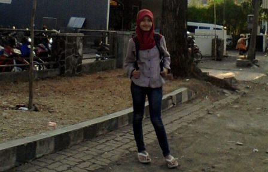

- 
Anis Eko Setiowati
Mahasiswi S1 Pendidikan Teknik Informatika 2009
Offering B Semester 7
Berasal dari Kediri
-

Tri Maryati
Mahasiswi S1 Pendidikan Teknik Informatika 2009
Offering D semester 7
Berasal dari bumi Bung Karno, Blitar
-

Rista Rusdianawati
Mahasiswi S1 Pendidikan Teknik Informatika 2009
Offering B semester 7
Berasal dari Trenggalek